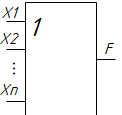

Булевы операции
Дизъюнкция
Дизъюнкция имеет следующий вид: F=Х1VХ2 (V – или)
Дизъюнкция принимает значение единицы (истины), если хотя бы одна переменная равна единице, а если все переменные равны нулю (ложь), то и результат дизъюнкции равен нулю.
Таблица истинности – это зависимость функции от аргументов.
Cоставляем таблицу истинности и чертим логическую схему.
В таблице истинности количество столбцов равно количество аргументов + количество функций.
22 =4 ( 2 – число аргументов)
если два аргумента то восемь строчек, если четыре аргумента то шестнадцать строчек.
Х1, Х2, Хn –это входы.
F – это выход.
При этом входов может быть много, но минимум два.
Таблица 1 - Истинность и тд прочее
| X1 | X2 | F |
| 0 | 0 | 0 |
| 0 | 1 | 1 |
| 1 | 0 | 1 |
| 1 | 1 | 1 |
Функция называеться "ИЛИ" так как она принимает значение удиницы когда или х1 или х1 или они обе равны единицы
